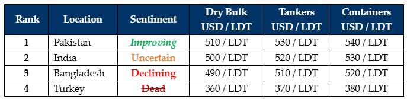

inWeekly Demolition Reports29/07/2024

The end of Week 30 marks a noteworthy moment in the Middle East conflict that is nowhere near end in sight and despitereports of meetings between Israeli PM Benjamin Netanyahu & several world leaders including a now cut-short visit to the United States, where despite repeated calls to bring the hostages home and end the incursions, Israel’s armed forces hammer away at the region reportedly even authorizing a squadron of previously classified design of jets to break cover this week, as it pounds suspected Hamas (and Hezbollah) strongholds where masterminds of the Oct 7 attack are believed to be, including midday Saturday local time when IDF jets struck a school in Gaza reportedly killing at least 30 displaced Palestinians in the process, and sadly, 7 children. In what seems to be a retaliatory strike within a matter of hours, a rocket attack on a soccer field in the Druze town of Majdal Shams in Israeli annexed Golan Heights killed at least 11 children & teens, and over 20 wounded, in what is now feared to be an imminent war with Hezbollah.
On the likelihood of an escalating conflict with Lebanon / Hezbollah and as highlighted in the last edition of the GMS WEEKLY, freight markets (will) continue to perform well and there remains little chance of a change in the flow of candidates into the ship recycling sector over the next several weeks. Accordingly, despite a pervading sense of enthusiasm at the bidding tables (and always at the right price), the latest trick unfolding in the sub-continent ship recycling markets is finding the right recycler who is willing to bet the right money on a short-term delivery bet that is inevitably routed to a loss, as any scarce vessels that do come the way of subdued global ship recyclers have to deal with the reality that the ship recycling community themselves have their backs against the walls of fundamentals that are themselves, delivering mixed / declining results on the regular.
Accordingly, and expectedly, amidst a prolonged absence of workable candidates, there has been no bounce to any of the markets this week, despite an overall positive budget being announced in India, Bangladesh remaining deathly silent with news of upwards of 200 people now reportedly dead, amidst communications blackouts & curfews imposed to keep the populous off & the army on the streets, as Turkey lies invisible. Pakistan is the only market to have displayed any optimism of late as Gadani Recyclers inadvertently become more competitive and even find themselves atop the market rankings this week. As steel declines further in India and remains dead on the floor in Bangladesh, the forecast does call for a gloomy next week, despite a rare reefer sale with significant non-ferrous onboard registering this week. The traditionally quieter monsoon months are also in full effect with incessant rains & even violent storms leading to reduced activity at yards, as laborers return to their hometowns.
For week 30 of 2024, GMS demo rankings / pricing for the week are as below.

📄 Download PDF: Ship-recycling-market-insight-Week-30-7-26-2024-Middle_East_Mayhem.pdfSource: GMS,Inc.https://www.gmsinc.net/gms_new/index.php/web